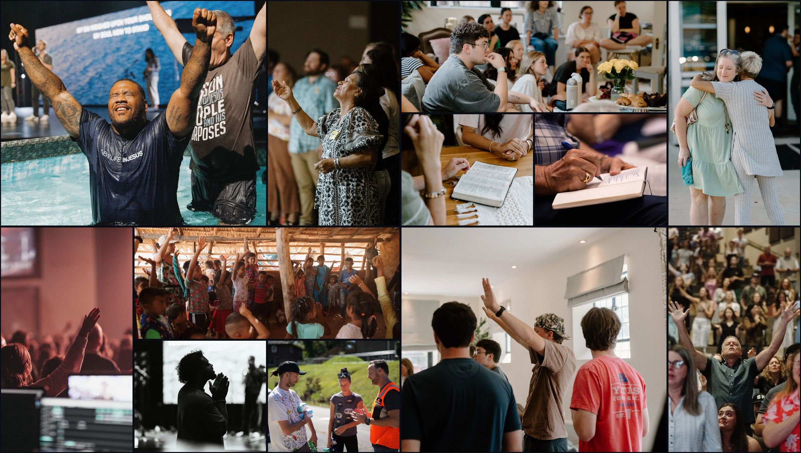

5 CirclesAn Antioch Movement Resource
5 Circles From the secret place to neighborhoods and nations. Each circle shapes a people with a passion for Jesus and His purposes on the earth.

An AntiochMovement Resource
A biblically based, time-tested framework for leaders who want to make disciples and plant churches marked by a passion for Jesus and His purposes on the earth.
5 Circles From the secret place to neighborhoods and nations. Each circle shapes a people with a passion for Jesus and His purposes on the earth.
Stories
Stories from across the Antioch Movement of people and churches living out all five circles. In each one, a passion for Jesus is born in the secret place, passed on life to life, lived out house to house, strengthened when the church gathers, and carried into the world.
Every story shows all five circles at work.
Resources